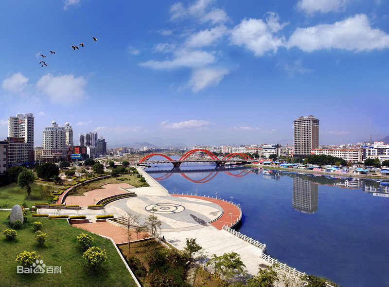
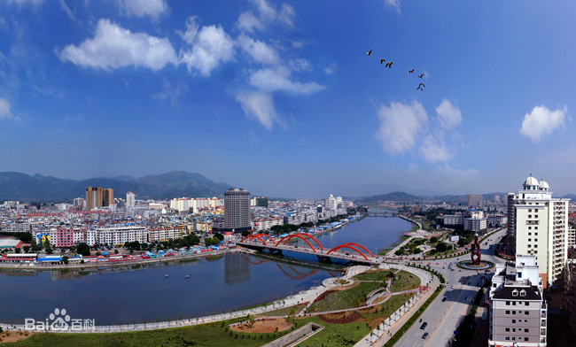

小仙游 |
仙游县（古属兴化府仙游县），隶属福建省莆田市。地处福建东南沿海中部，湄洲湾南北岸结合部，木兰溪中、上游，位于东经118°27'-118°56'，北纬25°11'-25°43'之间，县境东接莆田市区，西接永春、德化，南连泉州市泉港区、惠安县、南安市，北介永泰，东南濒临湄洲湾，挨天然良港秀屿港，接肖厝港。 县域东西宽49千米，南北长63.4千米，海岸线长5千米（全县唯一靠海的镇为枫亭镇），区域总面积1835平方公里，其中耕地约28000公顷，山地约133263公顷，林地约12861公顷。从县城至福州交通里程152千米，至莆田市区42千米，至泉州85千米，至厦门192千米。 根据第七次人口普查数据，截至2020年11月1日零时，仙游县常住人口905068人。 仙游县域整个地势顺趋木兰溪，西北高东南低，形成“马蹄状”，沿海、平原、山区层次分明。东西乡平原是鱼米和蔗糖之乡，东北角的“兴泰里”和西北角的“仙游山”是著名的珍稀林区。全境分布着“七山一水二田”。 
2017年，仙游县被列入国家园林县城。2019年1月9日，凭借莆仙戏入选2018—2020年度“中国民间文化艺术之乡”名单。2019年1月25日，入选2018年度全国“平安农机”示范县。第二批国家农产品质量安全县。  |